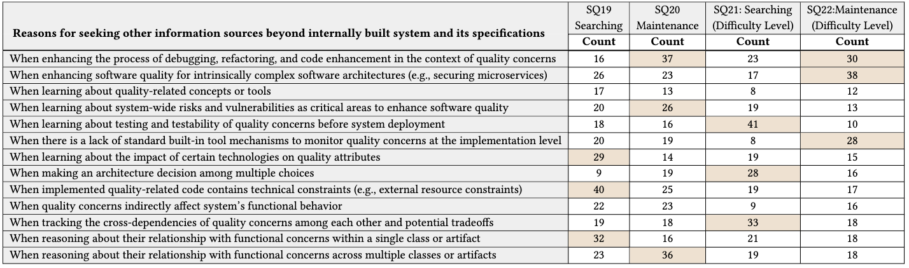

Challenges and Perceptions of Quality Concerns during Software Development
Project Description. Software systems are inherently multifaceted and complex, requiring developers to rely on various information sources beyond what is known within internally developed software systems. Unfortunately, previous studies have largely overlooked the role of quality concerns, also known as non-functional requirements, and the challenges they pose throughout software development. This study aims to empirically identify challenges related to quality concerns by investigating the information sources that participants explore beyond traditional means to address them. Using the Goal-Question-Metric paradigm and a mixed-methods approach, we design a comprehensive survey consisting of 52 questions categorized into themes and goals to address five key research questions. Based on the participation of 54 upper-level graduate students, many of whom were already employed in diverse industry settings, our survey findings indicate the presence of three predominant challenges. First, participants encounter difficulties in handling quality concerns due to their frequent entanglement with functional concerns. Second, information related to quality concerns is often scattered across the codebase, making it challenging for participants to trace them. Finally, the degree of vagueness observed at the requirements level poses implications for maintaining certain quality-related features (e.g., safety and security are viewed and treated the same).
